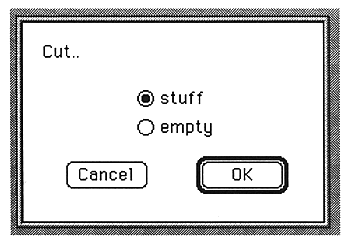

Return to previous page
｜
Return to menu
｜
Go to next page
●Quit
Exits the waveform editor and returns to the viewfinder.
Edit menu
●Undo
Cancels the previous operation.
●Cut
Cuts the selected range and saves it to the clipboard. The following screen is displayed.

The parameters set in this window are as follows:
stuff
Pack the cut parts after cutting.
empty
The cut part is not filled after cutting.
Return to previous page
｜
Return to menu
｜
Go to next page